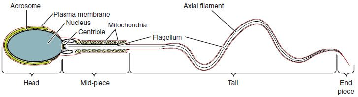

From puberty on, the walls of the seminiferous tubules turn out sperm continuously, over a thousand every second, and the cells between the tubules keep blood testosterone within a steady range. This page covers spermatogenesis and testosterone regulation together, because the two are run by the same hormones: how a stem cell becomes a sperm through mitosis, meiosis and a final reshaping; how Sertoli cells nurse the process behind a barrier; what each part of a sperm does; how GnRH, LH, FSH, testosterone and inhibin form a negative feedback system; and what testosterone does throughout the body.
Spermatogenesis: where and how fast
Spermatogenesis (sperm- = seed, -genesis = making) is the making of sperm from stem cells. It happens in the wall of every seminiferous tubule, and it runs as an assembly line from the outside in: the youngest cells sit against the basement membrane at the outer edge, and each generation is pushed a little closer to the hollow center, the lumen, as it matures (Figure 1).
It starts at puberty and continues for life, slowing gradually in old age. One cycle, from stem cell to released sperm, takes about 64 to 74 days, and sperm then spend several more days maturing in the epididymis. So a change that harms sperm production, such as a high fever or a new drug, shows up in a semen sample two to three months later, and recovers on the same slow timescale. Together the two testes make on the order of 100 million sperm a day.
The stages, from spermatogonium to sperm
- Spermatogonia (singular spermatogonium; sperm- = seed, gon- = offspring) are the stem cells, lying on the basement membrane. They divide by mitosis. Some daughters stay as stem cells, so the supply never runs out. Others are committed to becoming sperm and divide by mitosis a few more times.
- A committed spermatogonium copies its DNA and grows into a primary spermatocyte (-cyte = cell): diploid, 46 chromosomes, 92 chromatids. It moves inward across the barrier described below.
- The primary spermatocyte completes meiosis I, giving two secondary spermatocytes: haploid, 23 chromosomes, each still made of two chromatids.
- Each secondary spermatocyte quickly completes meiosis II, giving two spermatids (-id = offspring): haploid, 23 single chromosomes. One primary spermatocyte makes four spermatids.
- In spermiogenesis (the "-io-" marks the reshaping stage), each round spermatid reshapes into a sperm without dividing: its DNA packs tightly, an acrosome forms over the nucleus, a tail grows, mitochondria gather around the base of the tail, and most of the cytoplasm is shed and eaten by the Sertoli cell.
- The finished sperm are released into the lumen. They cannot yet swim forward; fluid from the Sertoli cells and contractions of the tubule wall carry them to the epididymis.
Worked example: counting through spermatogenesis
Problem. Sixteen primary spermatocytes complete meiosis normally. How many cells are there at each later stage, and how many chromosomes and chromatids does each cell hold?
- Primary spermatocytes. 16 cells, each diploid: 46 chromosomes, 92 chromatids (DNA already copied).
- After meiosis I. Each primary spermatocyte makes 2 secondary spermatocytes: 16 × 2 = 32 cells. Each is haploid, with 23 chromosomes still double: 46 chromatids.
- After meiosis II. Each secondary spermatocyte makes 2 spermatids: 32 × 2 = 64 cells. Each has 23 single chromosomes.
- After spermiogenesis. No division, only reshaping: 64 sperm, each with 23 chromosomes.
Answer. 16 → 32 → 64 → 64. Half of the 64 sperm carry an X chromosome and half a Y.
One more feature sets this line of cells apart: when spermatogonia and spermatocytes divide, cytokinesis stops short, and the daughter cells stay joined by thin bridges of cytoplasm. Hundreds of cells descended from one spermatogonium develop in step as one connected family and are released together. The bridges let haploid spermatids share gene products, so a sperm carrying an X and one carrying a Y still get the same supplies.
Sustentacular (Sertoli) cells
Every developing sperm cell is held in the folds of a tall supporting cell that stretches from the basement membrane to the lumen. These are the sustentacular cells (sustent- = to support), usually called Sertoli cells after the Italian physiologist who described them. Each Sertoli cell supports a fixed number of germ cells, so the number of Sertoli cells, set before puberty, limits how many sperm an adult can make.
The blood-testis barrier
Neighboring Sertoli cells are joined near their bases by tight junctions, the same sealing junctions you met in epithelium. The seal divides the tubule wall into two compartments:
- a basal compartment between the junctions and the basement membrane, holding the spermatogonia, which is open to substances from the blood;
- an adluminal compartment (ad- = toward, lumin- = the lumen) on the lumen side, holding the spermatocytes, spermatids and sperm. Anything reaching these cells must pass through a Sertoli cell.
This seal is the blood-testis barrier. As a young spermatocyte moves inward, new tight junctions form beneath it before the old ones above it open, so the barrier is never broken. The barrier matters for two reasons:
- Immune protection. Your immune system learned which of your own proteins to ignore in childhood, before any sperm existed. Spermatocytes and spermatids make new surface proteins after that, so to your white blood cells they look foreign. The barrier keeps antibodies and lymphocytes away from them, and the Sertoli cells also release signals that damp immune responses nearby. When injury or surgery breaks the barrier, a man can make antibodies against his own sperm, which can lower fertility.
- A private chemical space. Sertoli cells set the fluid around meiosis, keeping out many drugs and toxins and keeping in a high concentration of testosterone.
What Sertoli cells do
- Nourish the germ cells, which cannot reach the blood, supplying them with lactate as fuel.
- Guide the germ cells toward the lumen and release finished sperm.
- Engulf and digest the cytoplasm shed during spermiogenesis, and germ cells that die.
- Secrete the fluid that washes sperm out of the tubules.
- Make androgen-binding protein, which holds testosterone inside the tubule. The testosterone concentration in the tubules runs roughly 50 to 100 times that of the blood, and spermatogenesis needs that high level.
- Respond to FSH and testosterone, which reach them through receptor proteins, and release the hormone inhibin.
| Sertoli (sustentacular) cells | Leydig (interstitial) cells | |
|---|---|---|
| Location | Inside the seminiferous tubule wall, basement membrane to lumen | Outside the tubules, between them, near capillaries |
| Pituitary hormone that drives them | FSH (with testosterone) | LH |
| Main product | Support for spermatogenesis; androgen-binding protein; inhibin | Testosterone |
| Feedback it sends to the pituitary | Inhibin lowers FSH | Testosterone lowers LH (and GnRH) |
| Joined by tight junctions? | Yes: the blood-testis barrier | No |
| Contact with germ cells | Wraps every developing sperm cell | None directly |
The structure of a sperm
A sperm is about 60 µm long, most of it tail, and it has three parts (Figure 2):

- Head. A flattened oval about 5 µm long, almost all nucleus. The DNA is packed far more tightly than in a body cell, which makes the head small and protects the DNA. Over its front sits the acrosome (acro- = tip, -some = body), a cap-like sac of digestive enzymes made from the Golgi apparatus. Its enzymes let the sperm digest a path through the layers that surround the egg; how that happens is taught with the joining of egg and sperm.
- Midpiece. The midpiece wraps the start of the tail in a tight spiral of mitochondria. They make the ATP that powers the tail, from fructose and other fuels in semen.
- Tail. A single flagellum, the only one in the human body. Its core is the 9 + 2 arrangement of microtubules you met in cilia and flagella; motor proteins use ATP to slide the microtubules past one another, which bends the tail in waves and drives the sperm forward.
The sperm carries almost no cytoplasm and no organelles for making proteins. It survives on what it was given and on the fuel around it. Its mitochondria are destroyed soon after it enters an egg, which is why your mitochondrial DNA comes from your mother.
Hormonal control: the hypothalamic-pituitary-gonadal axis
You met the gonadal axis in the endocrine chapter: GnRH from the hypothalamus drives FSH and LH from the anterior pituitary, which drive the gonads. In a man this hypothalamic-pituitary-gonadal axis (HPG axis) works like this (Figure 3):
- GnRH in pulses. Neurons in the hypothalamus release GnRH into the hypophyseal portal vessels in bursts, roughly every 1 to 3 hours. The pulses matter: the pituitary cells respond to rising and falling GnRH, but under steady, unchanging GnRH they stop responding.
- LH and FSH. Each pulse makes the anterior pituitary release LH and FSH into the blood.
- LH → Leydig cells → testosterone. LH binds receptor proteins on the Leydig cells, which make testosterone from cholesterol. Testosterone enters the blood and, in high concentration, the tubules next door.
- FSH + testosterone → Sertoli cells → spermatogenesis. FSH and testosterone act together on the Sertoli cells, which support the germ cells, make androgen-binding protein and release inhibin. Testosterone is the more essential of the two for keeping spermatogenesis going; FSH is needed for full sperm output.
- Negative feedback, two brakes. Testosterone slows GnRH release by the hypothalamus and LH release by the pituitary. Part of that brake is estradiol, an estrogen made from testosterone in the brain. Inhibin (inhib- = to hold back), a protein hormone from the Sertoli cells, lowers FSH release by the pituitary, with little effect on LH.
OpenStax's version of the same loop, with the two cell types drawn in tubule sections, is in Figure 4.
![The control of testosterone. At the top, hypothalamic neurons release GnRH into portal vessels that reach the anterior pituitary. The pituitary releases FSH and LH. FSH goes to a supporting cell in the wall of a coiled testis tubule, which releases a binding protein and inhibin. LH goes to cells in the spaces between the tubules, which release testosterone. Arrows with minus signs show inhibin acting back on the pituitary and testosterone acting back on the pituitary and hypothalamus. Numbered notes describe the steps.](../figures/os-27-8.jpg)
The testosterone loop in seven slots
| Slot | Testosterone falls |
|---|---|
| Stimulus | Blood testosterone falls below its set point |
| Receptor (sensor) | Hypothalamic neurons and pituitary cells with androgen (and estrogen) receptor proteins |
| Afferent pathway | Testosterone carried in the blood to the brain |
| Control center | Hypothalamus, releasing GnRH |
| Efferent pathway | GnRH in the portal vessels, then LH in the blood |
| Effector | Leydig cells |
| Response | Testosterone release rises back toward the set point: negative feedback |
Reading the hormone pattern
Because each hormone brakes the one above it, you can locate a problem by reading the levels together:
| Situation | Testosterone | LH | FSH | Why |
|---|---|---|---|---|
| Testes fail (for example, Klinefelter syndrome) | Low | High | High | No testosterone or inhibin brake, so the pituitary works harder |
| Pituitary or hypothalamus fails | Low | Low | Low | No drive to the testes |
| Germ cells lost, Leydig cells intact (for example, after some chemotherapy) | Normal | Normal | High | Sertoli cells without germ cells make less inhibin |
| Taking testosterone or anabolic steroids | Blood androgen high; own testosterone low | Low | Low | The drug brakes the hypothalamus and pituitary |
The last row is why anabolic steroids shrink the testes and cut sperm production, and why a man's own testosterone takes months to recover after he stops: the brake stays on while the drug is in his blood, and the axis restarts slowly. You can follow that time course step by step in the anabolic steroid scenario of the prediction tool, from the endocrine chapter. The same brake is why testosterone taken for bodybuilding, or given as therapy, can leave a man temporarily infertile even though his blood androgen is high: the tubules lose the high local testosterone that only his own LH-driven Leydig cells can supply.
The effects of testosterone
Testosterone is a steroid. It crosses the plasma membrane and binds an intracellular androgen receptor protein, which changes which genes are expressed. In some tissues it is first converted to something stronger or different:
- Dihydrotestosterone (DHT), made by the enzyme 5-alpha reductase in the prostate, the skin of the genitals and the hair follicles. DHT binds the same androgen receptor protein more strongly.
- Estradiol, made by the enzyme aromatase in fat, bone and the brain. As you saw in the endocrine chapter, estrogen, not testosterone, closes the epiphyseal plates in both sexes, and it also keeps bone dense.
Before birth
The testes of a male fetus start making testosterone early, from about the eighth week. Testosterone makes the internal ducts develop into the epididymis, ductus deferens and seminal vesicles. DHT shapes the external genitals as a penis and scrotum and makes the prostate grow. Testosterone also helps bring the testes down into the scrotum.
At puberty
Rising LH and testosterone produce the male changes of puberty. The primary sex organs, the testes, ducts, glands and penis, enlarge and start working: spermatogenesis begins. Testosterone also produces the secondary sex characteristics, features that differ between the sexes but are not themselves part of the reproductive tract:
- Hair growth on the face, chest, underarms and pubic region, in the male pattern.
- Growth of the larynx and lengthening of the vocal cords, which deepens the voice.
- More skeletal muscle mass and strength, from faster protein synthesis.
- Heavier, denser bones and broader shoulders; the growth spurt, then closure of the plates through estradiol.
- Bigger, more active sebaceous glands, often with acne.
Throughout adult life
- Spermatogenesis, through the high local level in the tubules.
- Sex drive. In men, desire depends partly on testosterone, and partly on the estradiol made from it. In women, the part testosterone plays is less clear: a woman's own testosterone level does not predict her desire well, although testosterone given to older women with low desire raises it modestly.
- Red blood cell production. Testosterone raises erythropoietin release and marrow activity, which is why men's hematocrit runs higher than women's.
- Muscle and bone mass are maintained, and metabolism leans toward building protein.
- Scalp hair: in men with an inherited tendency, DHT shrinks scalp hair follicles, causing male-pattern baldness. Drugs that block 5-alpha reductase, such as finasteride, slow it and also shrink an enlarged prostate.
Adult blood testosterone runs roughly 300 to 1,000 ng/dL, with a daily rhythm that peaks in the morning. It falls slowly with age, by about 1% a year from middle age, with large differences between men. There is no sudden shutdown in men matching the one in women, and most older men keep making sperm.
Summary
Spermatogenesis turns spermatogonia on the basement membrane into sperm in about 64 to 74 days: mitosis renews the stem cells, a primary spermatocyte completes meiosis I to give two secondary spermatocytes, meiosis II gives four haploid spermatids, and spermiogenesis reshapes each into a sperm. Sustentacular (Sertoli) cells wrap the developing cells, form the blood-testis barrier with tight junctions, nourish them, make androgen-binding protein and release inhibin. A sperm has a head with a compact nucleus and an enzyme-filled acrosome, a midpiece of mitochondria, and a flagellum. In the HPG axis, pulsed GnRH drives LH and FSH; LH makes Leydig cells produce testosterone, FSH and testosterone drive the Sertoli cells, and testosterone and inhibin feed back negatively. Testosterone, partly as DHT and estradiol, builds the male reproductive tract before birth, causes the secondary sex characteristics at puberty, and maintains sperm production, muscle, bone and red cell production in adults.